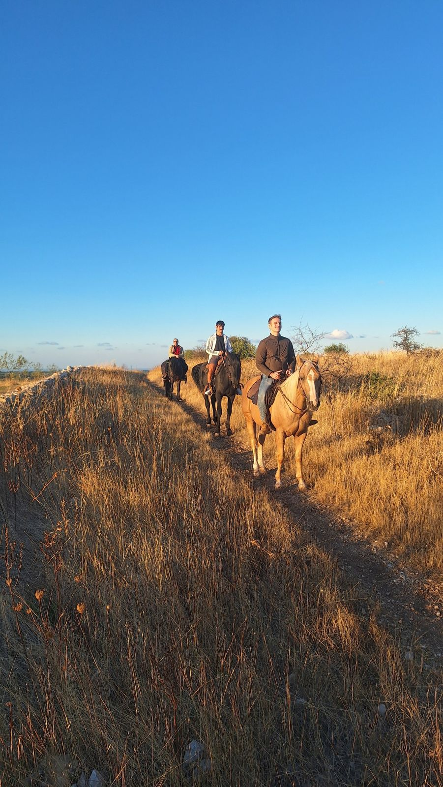
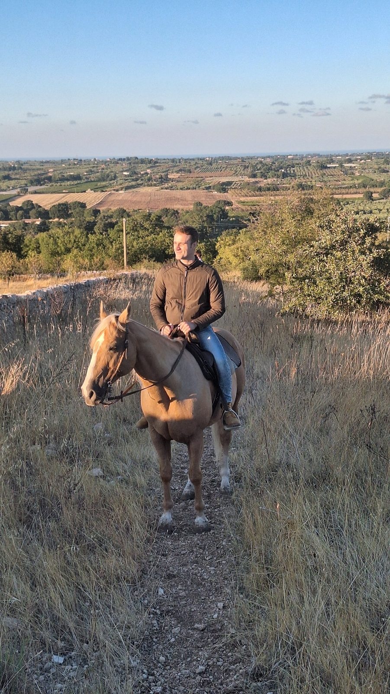
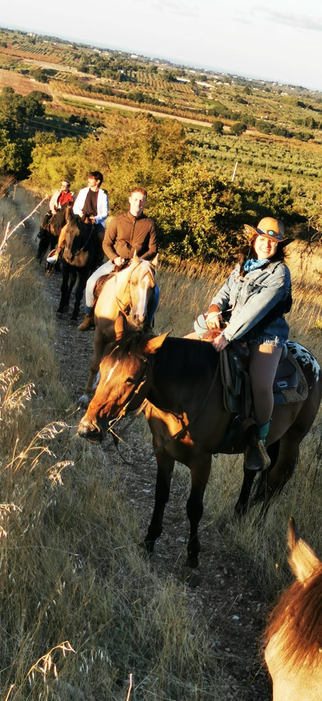
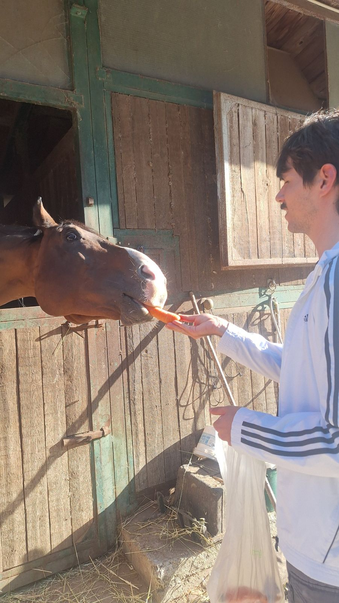
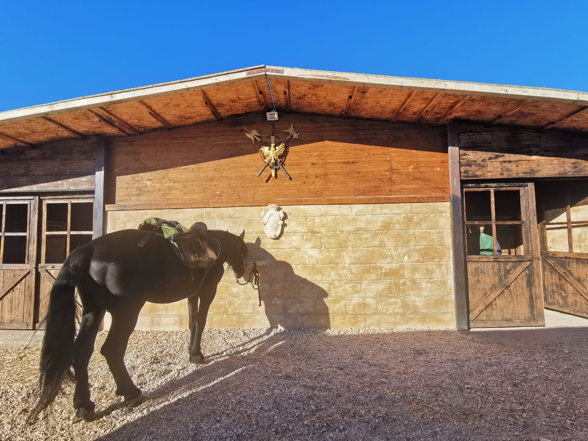
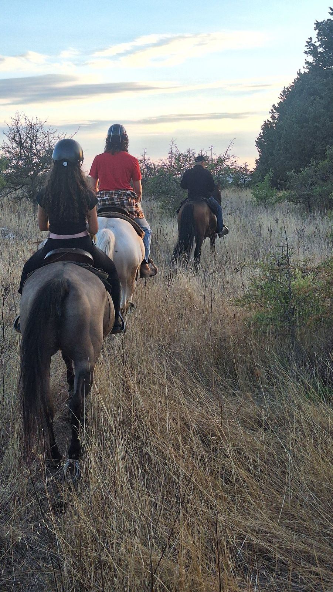
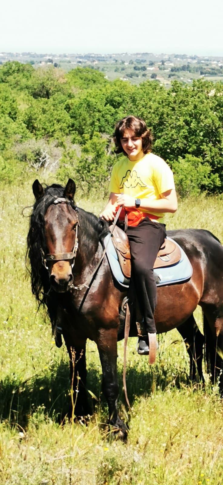

Impara a montare con un istruttore
Lezioni per chi parte da zero e per chi vuole migliorare: posizione in sella, andature, gestione del cavallo e cura in scuderia.
- Per chiPrincipianti e cavalieri di ogni livello
- Pacchetto10 lezioni + 1 in omaggio

Passeggiate per ogni livello, lezioni, giri in carrozza e giornate a contatto con gli animali nella campagna dell'Alta Murgia.
Scegli in base a come te la cavi in sella. Il percorso e l'andatura cambiano di conseguenza.

Prima volta in sella o quasi. Andatura tranquilla, sempre accompagnati da un istruttore.
Prenota →
Stai in sella con sicurezza al passo e al trotto. Percorsi più vari nella campagna.
Prenota →
Per chi monta con esperienza: galoppo nei tratti aperti della Murgia.
Prenota →
La campagna vista dalla carrozza trainata dal cavallo. Adatto a tutte le età, anche a chi accompagna i cavalieri.
Prenota →
Lezioni per chi parte da zero e per chi vuole migliorare: posizione in sella, andature, gestione del cavallo e cura in scuderia.
Acquista 10 lezioni di equitazione e l'undicesima è gratis. Ideale per chi vuole imparare a montare con continuità.

Un'esperienza a terra per bambini, famiglie, scuole e gruppi: si impara ad avvicinarsi al cavallo, a strigliarlo, a pulire gli zoccoli e a preparare la sua razione. Poi una visita agli altri animali della struttura.


